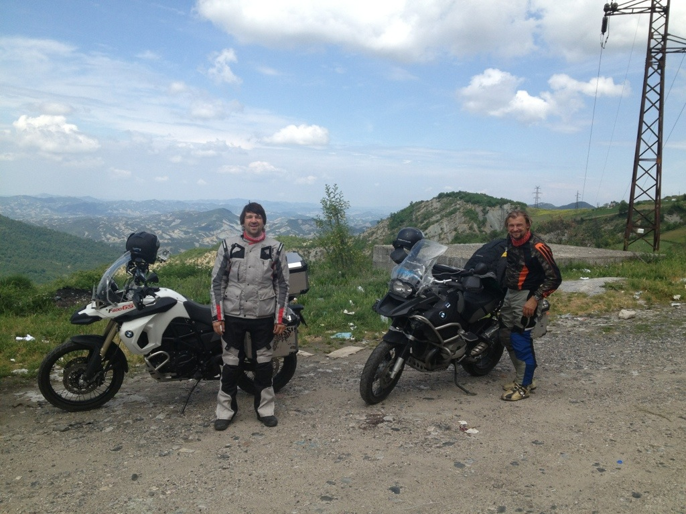
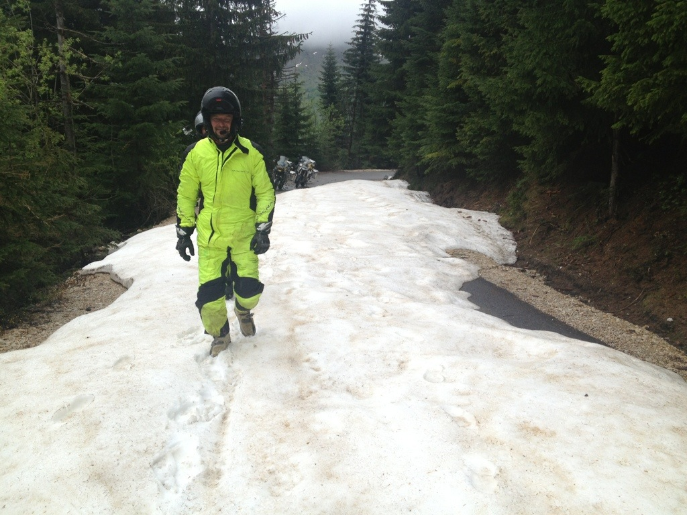

Tehtud. Oleme lõplikult tagasi.
Selleks, et viimane etapp natuke huvitavam oleks, otsustasime sõita Balkanimaade kaudu. Üle-eelmisel talvel, reisi ettevalmistades, tegime proovireisi Marokosse ning Hispaaniasse ja selle topeltsõitmine tundus tobe. Viimaseks etapiks ühines meiega trummar Soots, kes piletid ja transa sebis, Itaalias itaalia kööki ja imelist Toscana veinipiirkonda tutvustas, reisil peaaegu golfariks hakkas ja hoolimata sellest et väikese F800 tsikliga vihmas ja külmas raskem sõita oli, pidevalt positiivses meeleolus püsis.

Balkan on küll korduvatest sõdadest räsitud aga omamoodi ilus ja tsiklisõiduks super. Mäed kenad, hinnad odavad, turvalisus on ka enam-vähem … ehk nagu meie 90 algus. Albaania üllatab positiivselt. Riigil on võrreldes Makedoonia ja Kosovoga ja ilmselt ka seoses rannikuga ehk pisut paremad perspektiivid.
 Makedoonia pealinnas Skopjes satume filmi Must Kass, Valge Kass soundtracki tänavakontserdile. Montenegro on ka väga kena. Esimene katse Kosovost Montenegrosse sõites nurjub. Tee üle mägede on põhjapoolsetel nõlvadel varjulisemates kohtades veel liiga paksu lume all. Alguse kaevame lund ja lükkame tsikleid aga hakkab juba pimedaks minema ja läheme mägedest alla tagasi, et leida uus tee.
 Nii Kosovo kui Montenegro on ühepoolselt kasutuselevõtnud euro. See tekitab natuke teistmoodi kindluse tunde. Samas kui räägime ükskõik mis Balkanimaa inimesega, kindlustunne kaob. Inimesed arvavad, et olukord ei ole lahenenud ning lahenduseks oleks ilmselt vaja uut sõda. Mitte keegi ei ole rahul. Kes unistab vanadest Jugoslaavia aegadest, kellele on tehtud isiklikku ülekohut, mis vajab kättemaksu, kellele ei meeldi teise usk ja kes pole rahul käesoleva territoriaalsete jaotustega. Samas inimesed on “õnneks” nii vaesed, et enamus aurust läheb igapäevasele elule, mitte uue sõja ettevalmistusele. Öisel kuurortlinna Bari tänaval ehmatab meid burgereid müüv noorhärra. Kui talt inglise keeles õlut küsin, läheb tegelane näost ära ja hakkab tatistama, sajatama ning väänlema. Korra paneb endale isegi noa kõrile justkui oleks halb vaim sisse läinud, mida eemaldada tahab. Sajatustes on ära tunda viha ameeriklaste, moslemite, sotsialismi, kapitalismi, islami ja veel palju suhtes. Kui õigesti aru saame, siis noorhärra on ise provoslavnaja ehk õigeusklik. Vot selline versioon õigest usust. Arasuaamatult suures koguses sallimatust. On selle tekitaja meedia, kirik, poliitika, kodune kasvatus, isiklik kogemus või veel midagi muud, jääb selgusetuks. Loodetavasti on saabunud looduslikult nii ägedasse piirkonda siiski pikem rahu. Selleks peavad kohalikud aegade jooksul tehtud ebaõiglusest üle saama ning suutma keskenduda olevikule ja tulevikule. Jube keeruline.
 Talvel, reisi vaheajal alusasin Eestis mitme uue projektiga. Toome Tennisekeskuse valmimine on lõpusirgel ja seetõttu kiirustan tagasi Eestisse. Horvaatiast, mis mootorratasõiduks tõeline pärl, alustan tagasiteed üksi. Edasi tulevad Ungari, Slovakkia kenade Karpaatidega, siis Poola ja Leedu-Läti. Soots ja Sven võtavad pisut rahulikumalt ja saabuvad tagasi paar päeva hiljem.
Talvel, reisi vaheajal alusasin Eestis mitme uue projektiga. Toome Tennisekeskuse valmimine on lõpusirgel ja seetõttu kiirustan tagasi Eestisse. Horvaatiast, mis mootorratasõiduks tõeline pärl, alustan tagasiteed üksi. Edasi tulevad Ungari, Slovakkia kenade Karpaatidega, siis Poola ja Leedu-Läti. Soots ja Sven võtavad pisut rahulikumalt ja saabuvad tagasi paar päeva hiljem.
Keegi meist ei olnud varem Balkanil käinud. Pisut sai pilt sellest euroopa osast selgemaks. Kui piirkonnas rahu säilib, tahaks sinna, eriti just Aadria mere rannikule ja saartele, kunagi veel minna.

Pisut mõtteid ümbermaailmareisist.
Meilt on palju küsitud, kas olete siis nüüd paremad inimesed. Kas oleme, ei ole meie otsutada. Mina saan öelda, et tunnen ennast rahulikumalt. Ehk kiirustan veidi vähem ja teen neid asju rohkem, mis meeldivad. Ennem seda reisi ei meeldinud mulle üldse töötada. Tõin põhjenduseks saastatud ilma … et pole vaja siia saasta juurde toota jne. Peale esimest etappi kohtusin San Franciscos Mikaeliga. Sõber oli kohalikus joogade kogukonnas meeli täiendanud ja jagas kogemusi, mis aitasid mul töösse pisut teise pilguga suhtuma hakata. Ja milline rõõm on teha neid asju mis meeldivad! Näiteks saab väga suure rõõmuga toota Antslas vanapaberist tselluvilla. Tegemist on puistevillaga, mis aitab inimestel vähendada küttekulusid ja tal on nii palju häid omadusi, mille kirjeldamiseks sellest blogist jääks väheks – www.werrowool.ee Samuti on tore paigaldada päikeseelektrijaamasid. Inimeste kulud vähenevad, osad isegi teenivad – www.solarstation.ee Kõigil huvilistel palun minu poole pöörduda.
Kas midagi toimus ka Sveniga. Vat ei tea. Oleme päris palju koos reisinud ja see oli lihtsalt üks pikem reis. Ehk on ka pisut rahulikum. Temaga on alati huvitav vestelda olnud ja tema seisukohad erinevad paljuski tavaarusaamadest. Lisaks on tegemist vaieldamatult multitaleniga ja kõrvaltvaatajale võib jääda selgusetuks, kuidas ta kõike jõuab. Nüüd, natuke rohkem koos olles, pole ma tõele väga palju lähemale jõudnud. Temaga millegi koos tegemine tekitab keskmiselt suuremas koguses sünergiat. Tänu tema otsekohesusele jääb palju ajaraiskamist ja lollusi ära. Ja kui kergesti on võimalik teda naerma ajada!

Pisut teistmoodi plaanitust kukkus resil välja UNICEFiga seotud tegevus. Kuna meie graafik ei olnud täpsemalt paigas ning levi teel katkendlik, siis ei olnud võimalik väga palju kokkuleppeid ette teha. Tegime spontaanseid põikeid lasteaedadesse-koolidesse ja olime laste suhtes ehk rohkem avatumad ja tähelepanelikumad, kui me seda muidu oleks olnud. Lapsed on igal pool samasugused. Õpetajate seisukohad olid erinevamad. Vahest õnnestus ka pikemalt lastele reisist ja kaardist rääkida. Türgis tegi motopolitsei eskorti, et lastekodusse jõuda, kus privaatsustingimused olid arusaadavalt nii karmid, et Svenil õnnestus ainult salaja paar märki ja kaarti lastele sokutada. Bakuu UNICEFis aeti meid segi inglise motomatkajatega ning taheti juba Eurovisiooni pileteid anda. Ameerikas kohatud inimestele aga ehk õnnestus anda idee karma parandamiseks UNICEFi tegevuse toetamise kaudu.

Kui me ära läksime siis tuli meid saatma Jaagup Kreem kes ütles ajakirjanikule, et eks igal ühel on oma ümbermaailmareis. Meenutasime seda ütlust reisi jooksul mitu korda ja ei hakanud midagi muud moodi tegema, kui me muidu oleks teinud. Oleks saanud pikemalt ja raskemalt … oleks ka lühemalt ja kergemalt. Meie reis oli selline nagu ta oli.
Filmisime palju ja mingi aja jooksul paneme neid asju üles. Telesarja ja muud meediakära ei tahaks väga enam teha – alguses sai küll. Mingi osa musta materjali on siin.
Tänud kaasaelamast ja kõike head.
Juss

{kind=link}
{kind=link}